LakeFM: Toward a Foundation Model for Aquatic Ecosystems Using Irregular Multivariate Multi-depth Time Series Data
1Dept. of Computer Science, Virginia Tech
2Annis Water Resources Institute, Grand Valley State University
3Center for Limnology, University of Wisconsin–Madison
4Dept. of Ecoscience, Aarhus University
5Oak Ridge National Laboratory
6Dept. of Biological Sciences, Virginia Tech
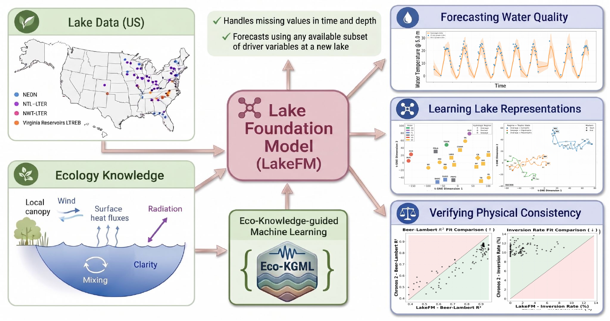
Motivation
Understanding and forecasting lake dynamics is critical for monitoring water quality and ecosystem health across lakes and reservoirs. While there is a growing body of work on modeling the temperature of water in lakes, modeling a single variate only provides a partial view to the complex interactions of processes governing lake dynamics, observed at varying depths, frequencies, subsets of variables, and levels of reliability from one site (lake) to another.
Benchmarking efforts such as LakeBeD-US have harmonized water quality observations across multiple monitoring programs - resulting in over 500 million observations spanning 17 variables from 21 lakes, yet the data remains plagued by high degrees of missing values, uneven sampling frequencies, and highly variable depth and variate coverage across sites. This sparsity and heterogeneity, which is intrinsic to real-world environmental monitoring, severely limits the ability of ML methods to scale to broader collections of lakes using irregular multi-variate multi-depth time series data.
At the same time, the broader ML community has made significant progress in developing time series foundation models (e.g., Chronos 2, MOMENT) that learn task-agnostic representations from large heterogeneous corpora. However, aquatic sciences still lacks a foundation model capable of unifying information across multiple lakes and variates with irregular frequencies and depths. Existing TS foundation models either focus on univariate signals or assume clean, densely sampled data.
Motivated by this gap, we ask the following research questions:
- RQ1. Can we build a foundation model for aquatic sciences that learns generic lake processes across a broad collection of lakes and variables, while retaining site-specific nuances?
- RQ2. Can we use such a foundation model to forecast lake dynamics using any subset of variables available at a lake with irregular observations across time and depth?
- RQ3. Can we extract feature representations of lakes that capture their static and time-varying characteristics, revealing novel information about their similarity and temporal evolution at macro-system scales?
To answer these questions, we introduce LakeFM, a foundation model pre-trained on a large-scale ecological dataset containing over 1.5 million samples, comprising over 1,000 diverse lake simulations from physics-based models and real-world observations from 21 lakes in LakeBeD-US dataset.
LakeFM — Methodology
LakeFM operates as an encoder-decoder framework with four core components designed to handle the sparsity and irregularity inherent in lake ecosystems.
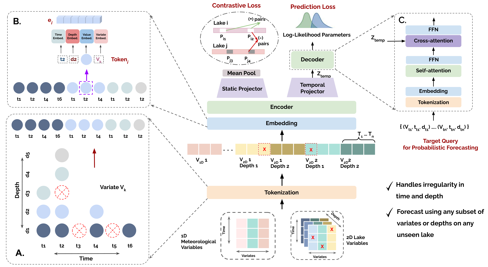
Tokenization & Embedding
Each observation tuple (time, variable, depth, value) is treated as a token. Composite embeddings combine time, depth, variate, and value signals — allowing the model to handle irregular grids without imputation.
Encoder Layers
Transformer layers with Rotary Position Embeddings (RoPE) and a learnable attention bias that differentiates intra-variate from inter-variate interactions across irregular token sequences.
Static & Temporal Disentanglement
Two parallel linear projectors separate the encoder output into static (lake-invariant characteristics) and temporal (dynamic behavior) subspaces, jointly optimized with contrastive and forecasting objectives.
Query-Based Forecasting
A decoder conditioned on arbitrary future (time, variable, depth) queries attends over the encoded history, enabling forecasts at any irregular output grid without requiring a fixed forecast horizon.
Predictions are parameterized as a Student-t distribution (μ, σ, ν), with per-token degrees-of-freedom ν learned adaptively to capture the heavy-tailed noise common in ecological measurements. Pre-training jointly minimizes a probabilistic forecasting loss and a lake-wise InfoNCE contrastive loss to encourage meaningful lake-specific representations.
Experiments and Results
Dataset
LakeFM is pre-trained on a large-scale ecological dataset containing over 1.5 million samples:
- LakeBeD-US [McAfee et al., 2025] — 500 million unique observations spanning 21 lakes across the United States, covering 17 variables with 60–70% sparsity on average.
- WQHanson Simulations [Hanson et al., 2023] — 4 simulation lakes generated using the process-based water quality model.
- FCR Simulations [Hipsey et al., 2019] — 1,000 simulations generated using the GLM-AED process-based model.
Evaluation Setup
The LakeBeD-US data is partitioned into an In-Distribution (ID) set (15 lakes) and an Out-of-Distribution (OOD) set (6 entirely unseen lakes). We compare against time-series foundation models (Chronos 2, LPTM, MOMENT) and a non-foundation local model (iTransformer trained per-lake).
Forecasting Performance
LakeFM achieves a best overall rank of 1.86 across all ID lakes and 2.17 across all OOD lakes in terms of lake-wise MSE. On OOD lakes, LakeFM shows the best zero-shot performance on all lakes except SUGG, where iTransformer (locally trained) edges it out. SUGG has much lower vertical resolution than most benchmark lakes, with only 5 observed depths versus 10+ on average. This may reduce the benefit of fine-grained depth modeling and favor iTransformer's variable-token design, which can emphasize broader cross-variate dependencies.
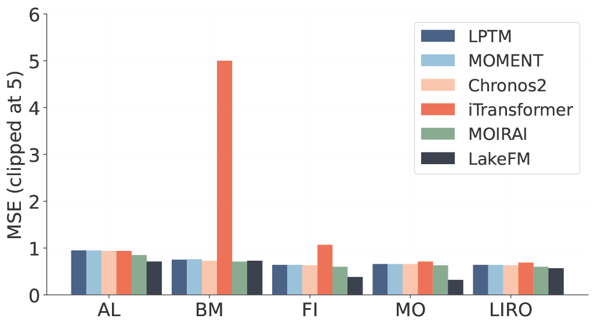
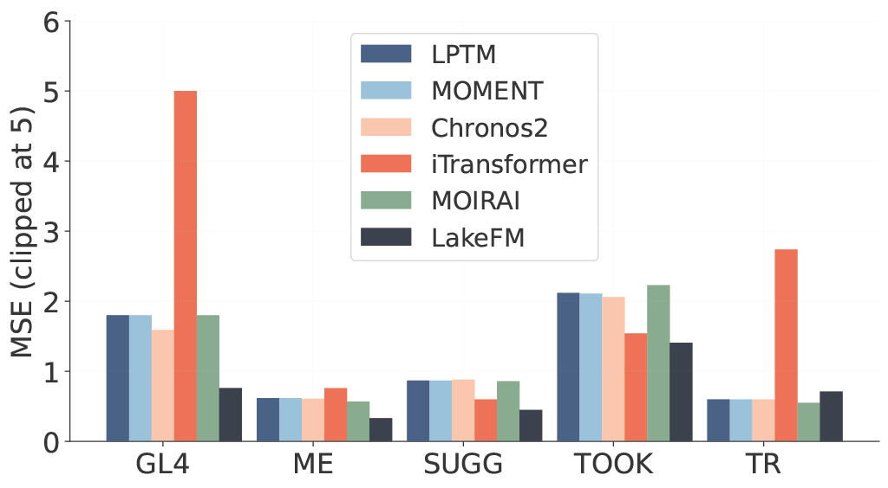
Discovering New Insights of Variate Interactions
LakeFM's query-based decoder enables forecasting under arbitrary input masking — a capability existing TSFMs lack. By selectively withholding variables or depth layers from the context window, we can probe the cross-variate and cross-depth dependencies that LakeFM has learned, generating ecologically novel and testable hypotheses.
5.2.1 Variate Masking
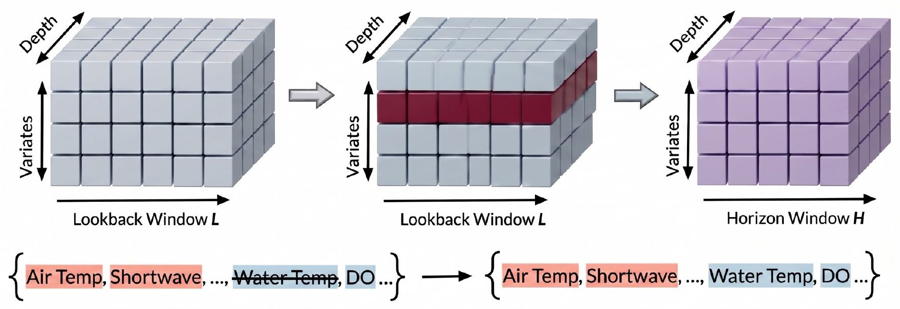
We mask individual variates in the context window and measure the change in forecasting performance of all variables — revealing which variables carry the most predictive information for others. As a case study, we examine Lake PRLA, masking either Dissolved Oxygen (DO) or Water Temperature (Temp) and observing the impact on DO forecasts.
Masking DO yields MSE = 12.57 and CRPS = 1.93, while masking Temp yields MSE = 11.00 and CRPS = 2.52. Although Temp masking results in a lower DO MSE, its higher CRPS (2.52) reveals that the model becomes overconfident yet inaccurate — it produces a narrow prediction interval that fails to capture the true value. Conversely, when DO is masked, the model correctly assigns higher uncertainty (lower CRPS = 1.93 despite higher MSE), producing a wider, more inclusive prediction range. This demonstrates that LakeFM's uncertainty estimates are physically meaningful: it recognizes when a crucial covariate is missing and responds by widening its confidence interval rather than collapsing to a point estimate.
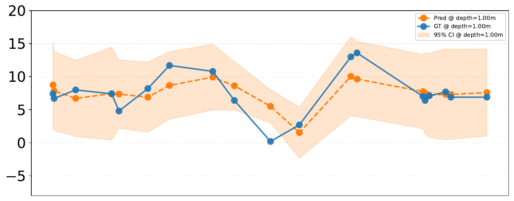
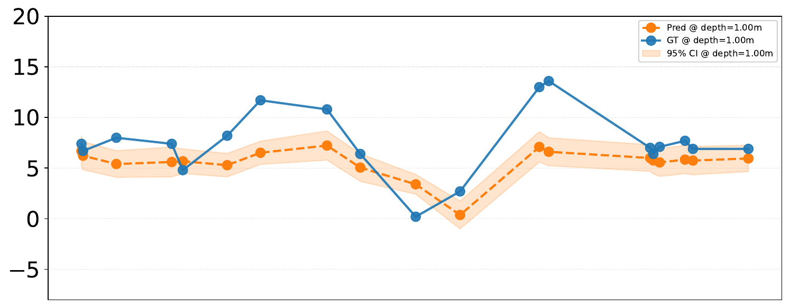
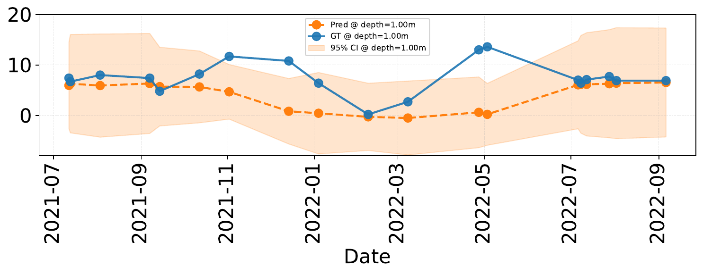
DO forecasts under different variate masking scenarios for Lake PRLA at depth 1.0 m.
5.2.2 Depth Masking
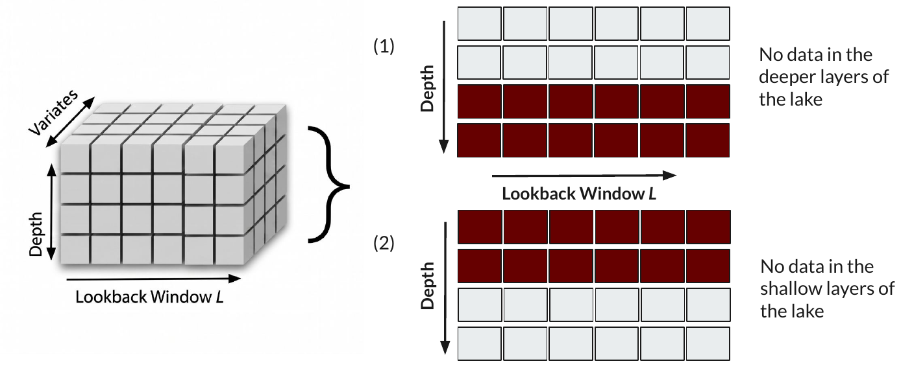
We study the effect of masking all variates at either shallow or deep layers in the context window, measuring the impact on forecasting performance. LakeFM leverages cross-depth relationships to maintain accuracy even when one depth stratum is withheld — for example, masking shallow layers in Lake BARC reveals that deep-layer context is sufficient to reconstruct near-surface dynamics.
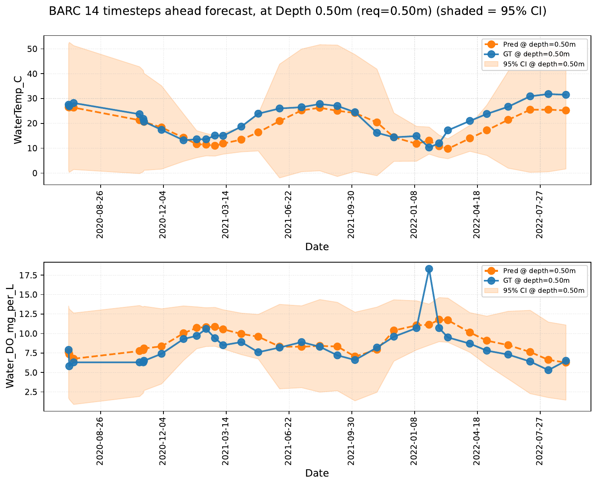
Depth masking scenarios for Lake BARC at depth 0.5 m.
Physical Consistency
LakeFM is not explicitly trained with physical constraints, yet its predictions demonstrate emergent compliance with two fundamental limnological laws, evaluated across 100 unseen simulation lakes:
- Thermal Stratification Law. During summer, lake temperature decreases monotonically with depth. We measure this via the inversion rate — the average number of depth-wise temperature inversions per day (lower is better).
- Beer-Lambert Law. Light intensity attenuates exponentially with depth due to biomass in the water column. We quantify this via the Pearson R² between predicted Chlorophyll-a and Light Attenuation (higher is better).
LakeFM shows a lower inversion rate and higher Beer-Lambert R² than Chronos 2 on the large majority of unseen lakes, indicating that physical plausibility emerges from pre-training on diverse ecological data alone.
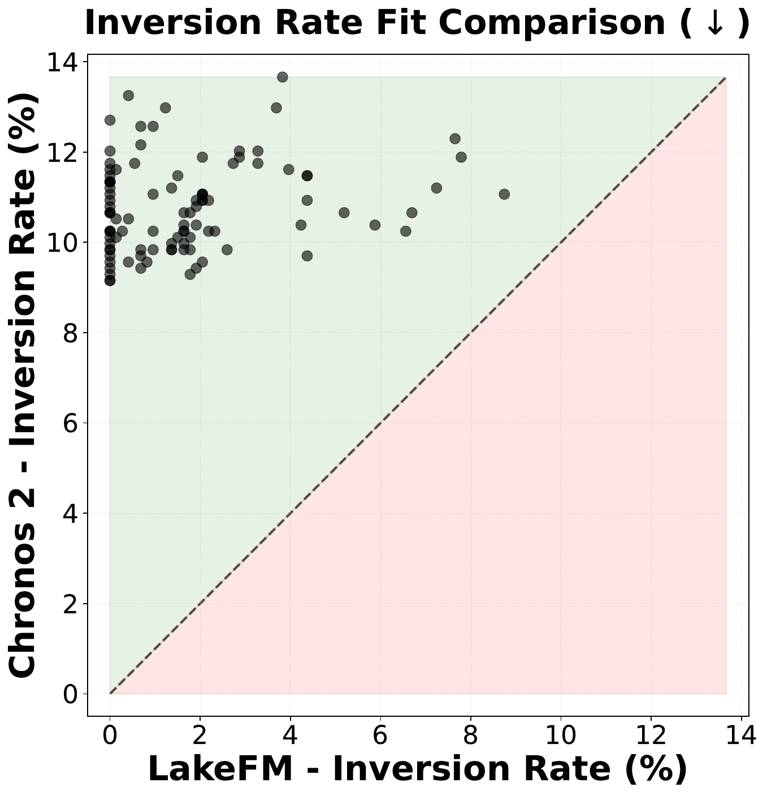
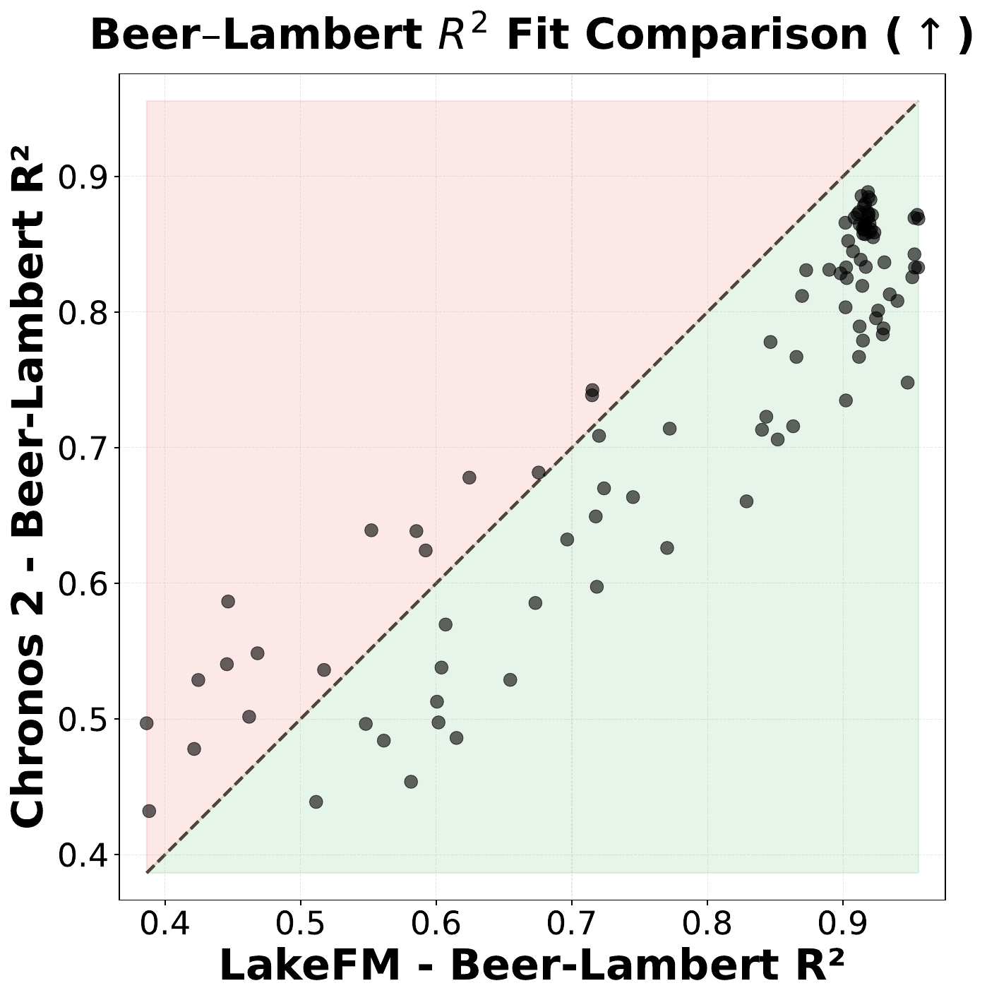
Learned Lake Representations
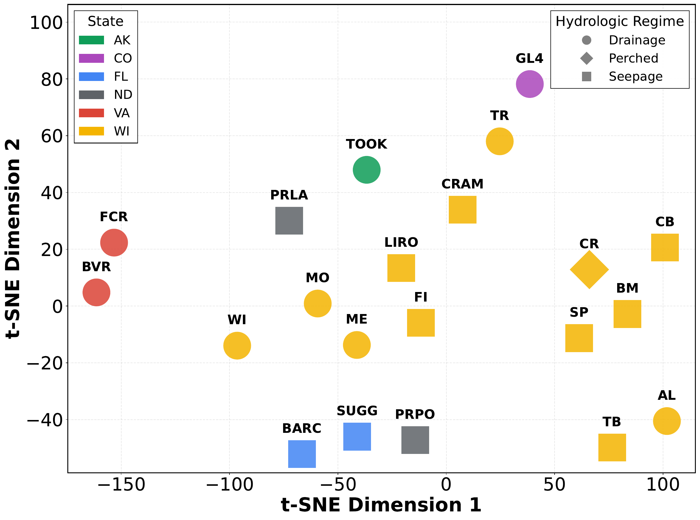
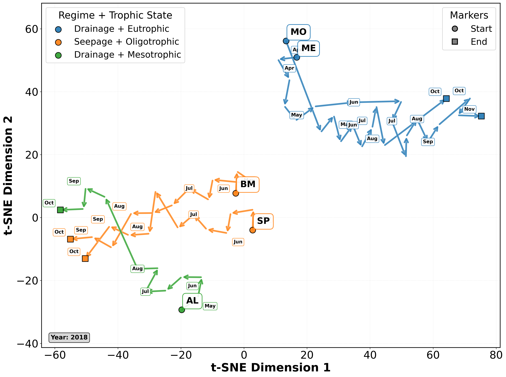
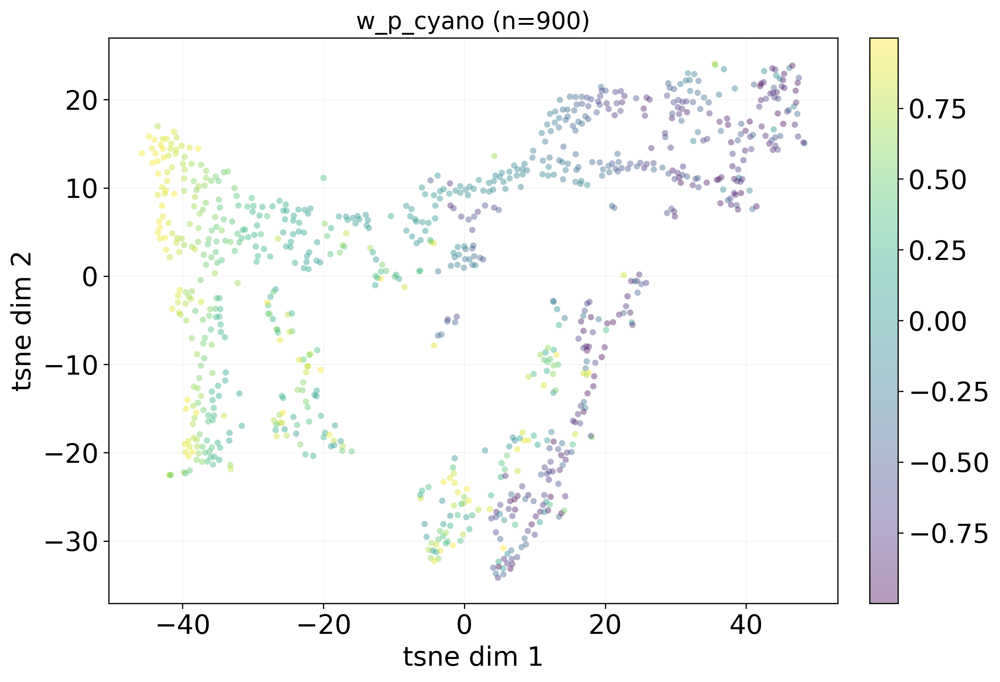
BibTeX
If you find this work useful, please cite:
@article{neog2024lakefm,
title = {LakeFM: Toward a Foundation Model for Aquatic Ecosystems
Using Irregular Multivariate Multi-depth Time Series Data},
author = {Neog, Abhilash and Fatemi, Sepideh and Sawhney, Medha and
Mehrab, Kazi Sajeed and Pradhan, Aanish and McAfee, Bennett J.
and Marchisin, Emma and Ladwig, Robert and Daw, Arka and
Carey, Cayelan C. and Hanson, Paul C. and Karpatne, Anuj},
year = {2024}
}
References
- P. C. Hanson, R. Ladwig, C. Buelo, E. A. Albright, A. D. Delany, and C. C. Carey. Legacy Phosphorus and Ecosystem Memory Control Future Water Quality in a Eutrophic Lake. Journal of Geophysical Research: Biogeosciences 128, 12 (2023), e2023JG007620. doi:10.1029/2023JG007620
- M. R. Hipsey, L. C. Bruce, C. Boon, B. Busch, C. C. Carey, D. P. Hamilton, P. C. Hanson, J. S. Read, E. de Sousa, M. Weber, and L. A. Winslow. A General Lake Model (GLM 3.0) for linking with high-frequency sensor data from the Global Lake Ecological Observatory Network (GLEON). Geoscientific Model Development 12, 1 (2019), 473–523.
- B. J. McAfee, A. Pradhan, A. Neog, S. Fatemi, R. T. Hensley, M. E. Lofton, A. Karpatne, C. C. Carey, and P. C. Hanson. LakeBeD-US: a benchmark dataset for lake water quality time series and vertical profiles. Earth System Science Data 17, 7 (2025), 3141–3165.
Acknowledgements
We sincerely thank Mary E. Lofton from the Department of Biology, Virginia Tech for preparing and curating the FCR simulations (comprising 1,000 simulation lake datasets) used in this study. This work was supported in part by NSF awards #2213549 and #2213550. We are also grateful to computing resources from Bridges-2 at Pittsburgh Supercomputing Center available through NAIRR pilot award #240161 and from the Advanced Cyberinfrastructure Coordination Ecosystem: Services & Support (ACCESS) program, which is supported by National Science Foundation grants #2138259, #2138286, #2138307, #2137603, and #2138296. We are also grateful to the Advanced Research Computing (ARC) Center at Virginia Tech for providing access to GPU compute resources for this project. This manuscript has been authored by UT-Battelle, LLC, under contract DE-AC05-00OR22725 with the US Department of Energy (DOE).